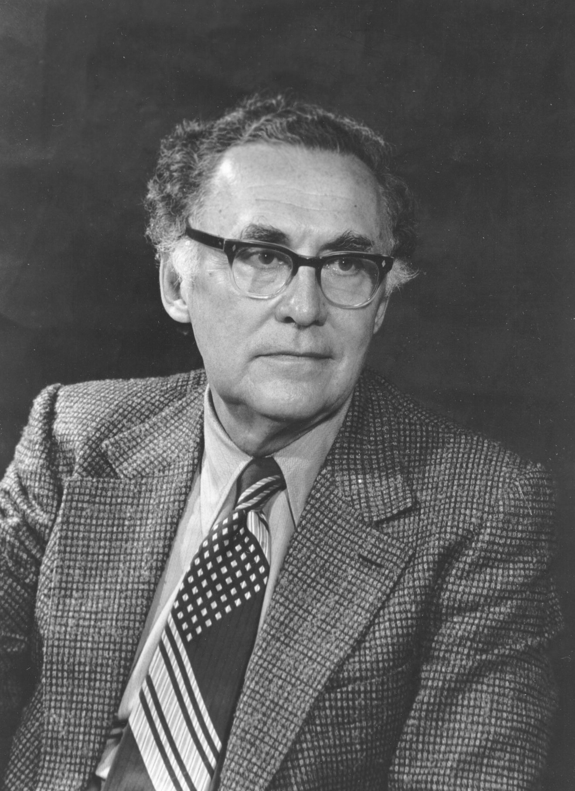

Buracos Negros
-
Modelo didático
virtual
de um
buraco negro
-
Linha do Tempo
-

Lei da Gravidade
Isaac Newton
Isaac Newton, aos 23 anos, propôs a lei da gravidade após se perguntar porque uma maçã caiu de uma macieira. Desse modo, Newton, tomando como base os estudos de Johannes Kepler, trabalhou até chegar na Lei da Gravitação Universal. Essa lei, diz que se dois corpos possuem massa, ambos estão sujeitos a sofrer uma força de atração mútua proporcional às suas massas e inversamente proporcional ao quadrado da distância que separa seus centros de gravidade. Sendo assim, a fórmula é F = G.m1.m2/r2. Nessa fórmula, G é igual a 6,67408 × 10-11 m3 kg-1 s-2, o que foi descoberto por Henry Cavendish apenas um século mais tarde, provando que a atração entre corpos de pouca massa pode ser desprezada.
-

Teoria da Relatividade Restrita
Albert Einstein
Albert Einstein propôs a Teoria da Relatividade Restrita em 1905. Nessa teoria, ele mostrou que o espaço e o tempo são relativos, isto é, dependem do movimento do observador. Ela, no entanto, só vale para observadores em movimento retilíneo uniforme, sem aceleração. Após perceber algumas contradições com a Lei da Gravitação Universal, Einstein começou a trabalhar na ideia de estender essa teoria para corpos acelerados. Essa teoria portanto segue dois postulados: 1. Todas as leis da natureza são as mesmas em todos os sistemas de referência inerciais. 2. A velocidade de propagação da luz no vácuo é a mesma em todos os sistemas de referência inerciais.
-

Anã Branca
Chandrasekhar
As Anãs Brancas foram descobertas em 1862 e são mais densas que o Sol, porém pouco se sabia a respeito delas. Em 1915, Chandrasekhar publicou seu trabalhou a respeito da máxima massa de uma anã branca. Segundo ele, o limite da massa desse astro é 40% acima da massa do Sol. Sua densidade também é cerca de um milhão de vezes maior que a do Sol e são estrelas mortas, ou seja, incapazes de gerar energia. Essa descoberta foi confirmada com exatidão por todos os trabalhos teóricos e observacionais que se seguiram, até os dias de hoje.
-

Teoria da Relatividade Geral
Albert Einstein
Albert, 10 anos após publicar sobre a Teoria da Relatividade Restrita, propôs a Teoria da Relatividade Geral. Nesse trabalho, o físico aumentou a abrangência da teoria, fazendo com que ela funcionasse também para fenômenos físicos pertencentes a sistemas acelerados (não inerciais). Nessa obra, basicamente, o cientista apresentou a curvatura do espaço-tempo de modo que quanto maior a massa, maior será a curvatura do espaço tempo a seu redor. No entanto, essa curvatura também é afetada pela distribuição de massa no universo, como em um tecido que tem diversas massas distribuídas acima dele.
-

Raio de Schwarzschild
Karl Schwarzschild
Após ler sobre a Teoria da Relatividade Geral, Karl Schwarzschild começou a trabalhar nas equações de Einstein e encontrou uma solução com uma característica peculiar: quando o raio é muito pequeno juntamente a uma massa muito grande, o denominador do termo de correção pode ser nulo. Esse caso, faz com que uma singularidade apareça, tornando o corpo um buraco negro.
-

Estrela de Nêutrons
Volkoff-Oppenheimer
Fritz Zwicky. em 1939, foi o primeiro a supor a existência de estrelas de nêutrons. Ele alegava que essas estrelas seriam responsáveis por pelos fenômenos mais energéticos conhecidos, as explosões de supernovas, e pela existência de raios cósmicos – teoria elaborada com a colaboração de Walter Baade. No entanto devido a falta de credibilidade desse astrofísico, apenas em 1968 se percebeu que eram estrelas de nêutrons girando em torno de seu eixo muitas vezes por segundo... e estavam associadas a restos de supernovas. Essas estrelas são muito mais densas que anãs brancas, possuindo raio apenas 3 vezes maior que o necessário para que se tornassem um buraco negro. Descobriu-se, também em 1939, que as estrelas de nêutrons, caso existissem, teriam um limite de 3 massas solares chamado de limite de Volkoff-Oppenheimer.
-
Galáxia de Seyfert
Carl Seyfert
As galáxias de Seyfert são galáxias espirais com núcleos pequenos e luminosos, formando assim parte da luminosidade total da galáxia na faixa do visível, sendo classificadas como galáxias ativas. Essas galáxias foram descobertas por enviarem também radiação em comprimentos de onda variando do infravermelho até os raios X, apesar da maioria emitir a maior parte de sua energia em infravermelho. Essas galáxias são extremamente brilhantes e devido ao seu comportamento, assume-se que são extremamente densas.
-

Quasar
Vários astrofísicos
Alan Sandage e Thomas Mathews procuravam identificar novos astros, quando perceberam objetos com aparência estelar, ou quase-estelar. Em 1963, Maarten Schmidt mostrou que os espectros dos quasares podem ser entendidos se eles estiverem a velocidades altíssimas, deslocando suas raias espectrais para o vermelho, devido ao efeito Doppler. No entanto, objetos que se movem a grandes velocidades estão a distâncias enormes, de forma que as luminosidades correspondentes deveriam ser gigantescas. Além disso, esses objetos apresentam variabilidade no fluxo de luz, ou seja, são muito compactos. Dois astrofísicos teóricos, Edwin Salpeter e Yakov Zel’dovich, sugeriram nos anos seguintes que essa energia poderia ser produzida por um processo de captura de gás por buracos negros de grande massa. Em 1969, Donald Lynden-Bell mostrou que tais objetos poderiam explicar várias características observadas em núcleos de galáxias.
-
Detecção de um buraco negro
Vários astrofísicos
Um buraco negro chamado Cygnus x-1 foi detectado pela primeira vez no espaço devido a percepção de fontes celestes de raios-x. Essa detecção foi possível devido a formação um sistema binário com uma estrela normal de 33 massas solares que acaba sendo sugada para o campo gravitacional do buraco negro.Essa massa, acaba sendo espiralada pelo buraco negro e libera raios-x devido a transformação de energia que sofre. Até hoje, pouquíssimos buracos negros são conhecidos pela humanidade, pois menos de 100 foram detectados. No entanto, estima-se existam milhões só na Via Láctea.
-
Imagem de Buraco Negro
Katie Bouman
Foi responsável, juntamente a uma equipe de outros cientistas, por desenvolver o algoritmo que foi capaz de decodificar as informações captadas por uma rede de telescópios e construir a primeira imagem de um buraco negro. A captação da imagem foi possível ao se observar o disco de acreção. Próximo ao buraco negro, a formação do disco possui uma temperatura extremamente elevada, fazendo com que este emita luz. Essa luz é captada pelos telescópios e aparece na imagem.
A primeira imagem de um buraco negro encontra-se na página inicial.
-
-
-
Simulação da distorção causada por um buraco negro
-
O raio de Schwarzschild
O raio de Schwarzschild ralaciona a massa de um objeto com o raio do horizonte de eventos que este teria para ser um buraco negro de Schwarzschild. Tal raio é proporcional à massa e tem como constante de proporcionalidade a expressão 2G/c². G é a constante cosmológica e c é velocidade da luz.
Aqui você poderá calcular qual será o raio de uma esfera para que, com a massa informada, ela seja um buraco negro de acordo com a equação do Raio de Schwarzschild. Para isso, você precisa informar apenas a massa do corpo (é possível usar notação exponencial)
Insira um valor de massa para obter o raio do horizonte de eventos
-
Quem somos
- Página Inicial
- Linha do Tempo
- Mapa Conceitual
- Simulação
- Calculadora
- Quem somos